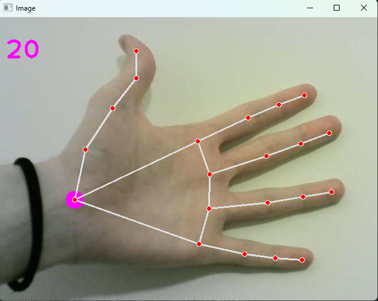

Hand Tracker
Computer vision project that uses "opencv-python" and "mediapipe" packages in conjunction for visual recognition and perception of user's hands.
GithubComputer vision project that uses "opencv-python" and "mediapipe" packages in conjunction for visual recognition and perception of user's hands.
Github